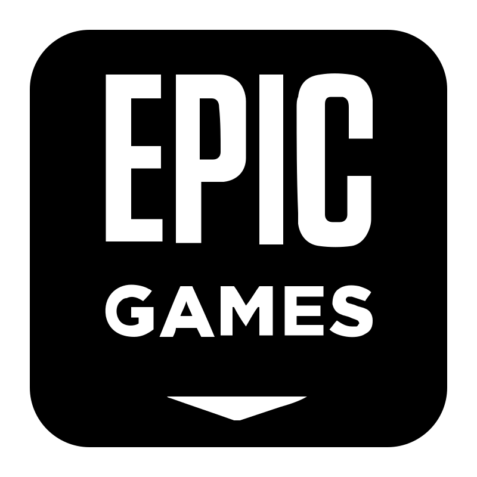
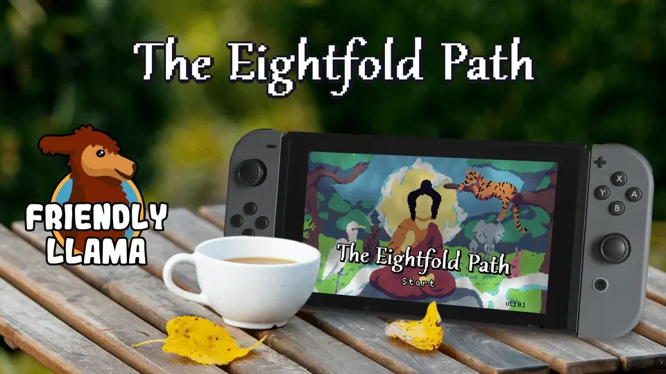
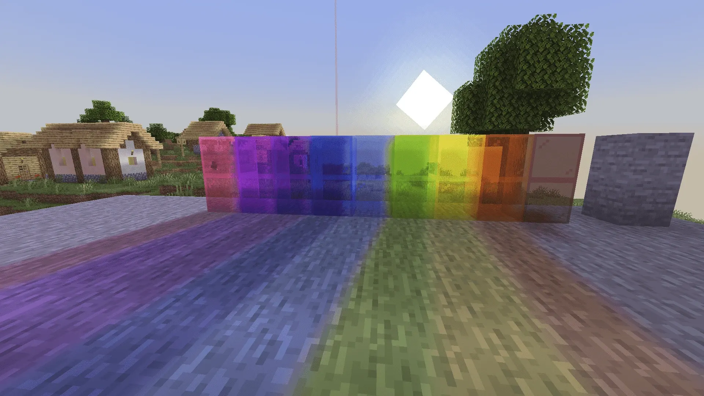
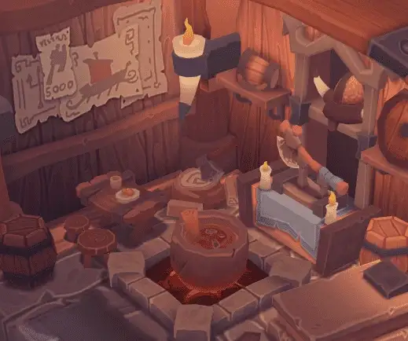
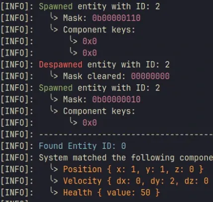

Hello!
I'm Sara San Martín, professional Game Developer and Designer.
I specialize in C++ and C#, with extensive experience in Unity development.
My largest project to
date has been the design and development of a complete custom animation software.
PROJECTS


Credited in: The Eightfold Path
Custom Animation Software

Minecraft Shaders with GLSL

C++ 3D Vulkan Renderer
Blog: Rendering Fur in games

C++ ECS API
Pong made in C and OpenGL
GAMES
What would you do?
Just One More Song
Short platformer experience